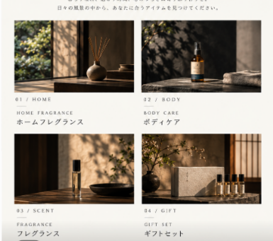

INIMU / FIND BY ITEM
アイテムから探す
指定された2枚の画像を、そのままSHOPのビジュアルとして使用した確認用プレビューです。


比較用プレビューのみ。指定画像は元ファイルと同一内容でコピーして使用しています。本番SHOPは変更していません。
INIMU / FIND BY ITEM
指定された2枚の画像を、そのままSHOPのビジュアルとして使用した確認用プレビューです。

比較用プレビューのみ。指定画像は元ファイルと同一内容でコピーして使用しています。本番SHOPは変更していません。